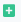
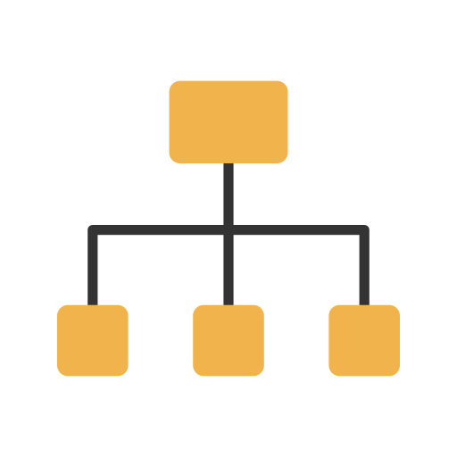
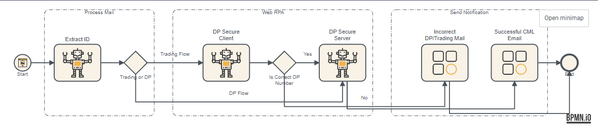

#
Linear Modeler
To create linear model for process and workflow design. Linear model work same as process models only difference in a Linear model is they are easier to manage if you want to add processes in between at later stage. You can build a linear model and then convert it into BPMN diagram and deploy it.
Select Linear Modeler
Click on  Add Record on top to create a linear model.
- Enter process id and name.
- Select Summary form from list of forms. The summary icon in Task View will use this form layout to display complete summary of data involved in task.
- Select Process Fields by clicking on Pen icon in right bottom to select process fields.
- Select multiple fields by clicking on check box. You can also add fields by clicking on (Add Record) in right top corner.
Click on Save to select the fields for the process.
Click on the Start icon. Click on Maximize/Expand to expand bottom frame.
- Enter id, name.
- In Task Input select input fields for start event by clicking on check box. Tick required check box if field is required in Start event.
- Enter business id prefix. This will be used as prefix in business id.
- Select Business id value, Process title from list of fields available in Start event.
- Tick the Start form check box if the start is input form.
- Select Connector from list for which category is Start Event.
- In Task Rules select rules for validation, if any, by clicking on pick icon.
- Click Stop on Error check box if task is to be stopped on occurrence of Error. You can also add a Task rule from here.
Drag and drop shapes from left hand side tasks and activities.
For each task icon in the model, click on the task icon.
#
Task Attributes
For each task enter following attributes:
#
Task Type
Following are the different task type available and task specific attributes to be entered depending upon task type.
| Task Type | Image | Description | Specific Field | Description |
|---|---|---|---|---|
| Decision | Allows to define a condition that determines execution of workflow | Decision Model | Select Decision model from list which you have created in Decision Modeler | |
| User Task | A task that need to be done by a human | Task Title | Select from process fields.This appears in user task rows | |
| Expanded Content and History Section | If ticked then when you are working on the task by default Content and history section at the bottom is expanded. | |||
| QC Task | Quality Control tasks | Task Title | Select from process fields.This appears in user task rows | |
| Expanded Content and History Section | If ticked then when you are working on the task by default Content and history section at the bottom is expanded. | |||
| App | Apps like send email/message | Connector | Select from list where connector category is App | |
| OCR | Allows to extract data from digital documents | Connector | Select from list where category is OCR | |
| RPA |  |
To automate existing manual repetitive tasks | Connector | Select from list where category is RPA |
| Machine Learning | Applications like face/voice recognition | Connector | Select from list where category is Machine Learning | |
| Bot | To perform automated, repetitive tasks pre-defined tasks like data archive scheduers | Connector | Select from list where category is Bot | |
| Rule | To perform rule based validations. Task Rules applied during execution to be defined | |||
| Sub Process |  | To call a process within another process | Sub Process | Enter Sub Process Name |
#
Decision Gateway
For all the decision gateways, click on the decision gateway icon and expand the form which is at the bottom of the page.
- Enter details like id and name.
- Select background colour and colour.
- Select task rules from pre-defined rules by clicking on + icon. Click on SOE (stop on error) check box if task is to be stopped on occurrence of error. You can also add Rules in the Rules list.
For decision gateway enter condition and target (next task ) for true and false condition in the form at the bottom of the page. Target is the task/activity it should go to if condition is satisfied.
- Enter id, name and expression. Select target from list.
Click on Save to save the diagram by giving name.
Click on BPMN diagram to view BPMN diagram for the model. Click on Save Diagram and diagram will be saved.
Click on Deploy to deploy the model. Once deployed the linear model is available in process view and you can start an instance of the process anytime you want.

#
Actions
In the main list page you can perform following actions.
Click on Import to import model created using any other software and save in Actionabl format.
Actions
Download: To download a Linear diagram which can be used to upload in any system.Delete: To delete the Linear diagramCopy to Published: Copy Linear diagram to Published folder for other users to seeCopy to Private: Copy Linear diagram to Private folder